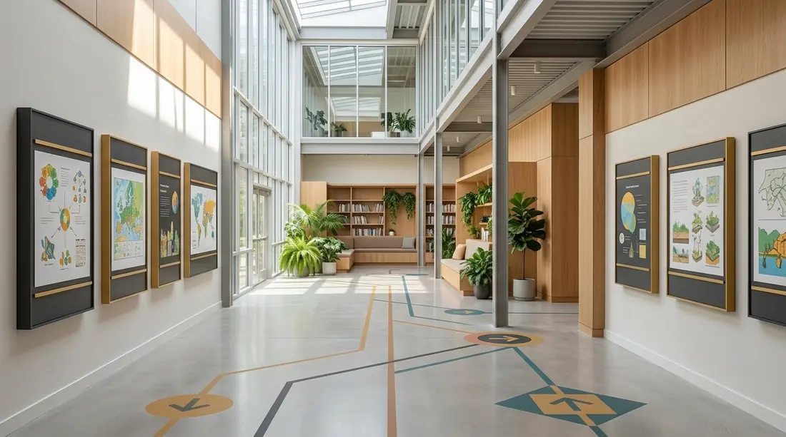
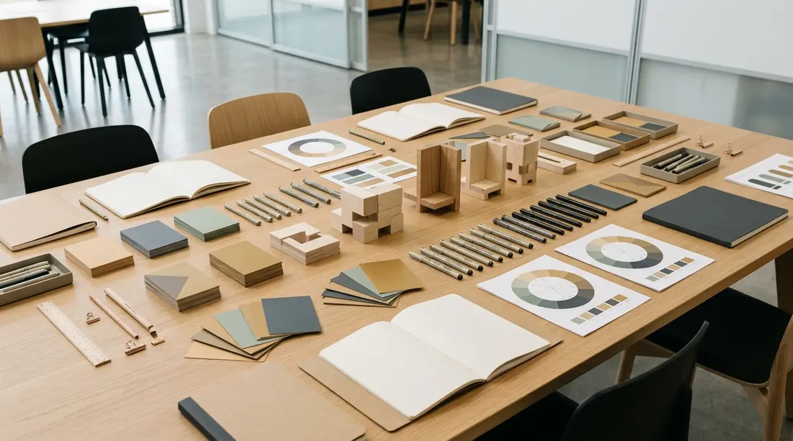

المبدأ الحاكم: نُمكِّن ولا نَنوب
المركز لا يصمّم عنك، بل معك. يُقاس نجاح الاستشارة بما تصنعه وحدك بعدها، لا بعدد الوسائل التي خرجت منها (العتيبي، ٢٠٢٦أ).
مختبر تنفيذي للمعلم والمتعلم
افهم المشكلة، وولّد الأفكار، وابنِ الوسيلة، واختبرها. كل ذلك هنا على جهازك، بلا حساب ولا انتظار.
الفصل نفسه يعلّممن تباين تقدّم التلاميذ في عام فسّرته خصائص الفصل الفيزيائية (Barrett, Davies, et al., 2015).
ابنِ ولا تستهلكحجم أثر بناء الطالب خريطة المفاهيم بنفسه، مقابل ٠٫٤٣ لدراستها جاهزة (Schroeder et al., 2018).
التباين رقم يُقاسأدنى نسبة بين النص وخلفيته في معيار الإتاحة (World Wide Web Consortium, 2023).
كل قاعدة في المنصة تحمل وسم مستوى دليلها، والتفصيل في عن المنصة:
المرجع حين تحتاجه
دليلان يكمل أحدهما الآخر: الأول لما يُصمَّم على الورقة والشاشة، والثاني لما يُعلَّق على الجدار ويُمشى بجانبه في الممر. ومعهما فصلان قصيران في أصول الصنعة وعمل الدماغ.
الصور الفوتوغرافية في المنصة تصوّرات توضيحية لأماكن وأدوات، مولَّدة آليًا، وليست صورًا لمدرسة بعينها.
من مشكلة تعلّم إلى وسيلة مختبَرة
الدماغ يبحث عن المعنى قبل التفاصيل، ويربط الجديد بما يعرفه (Caine & Caine, 1991). الوسيلة التي تبدأ من تعثّر حقيقي تجيب عن سؤال قائم في ذهن المتعلم، والتي تبدأ من الشكل تجيب عن سؤال لم يُسأل.
هذه بطاقة مهمة التصميم في حقيبة «جرافيك التعليم» (العتيبي، ٢٠٢٦ب)، وأصلها مرحلتا التعاطف والتعريف في التفكير التصميمي (Hasso Plattner Institute of Design at Stanford, 2010). قاعدة مهنية
توليد الأفكار وتقويمها عمليتان مختلفتان. ودراسات تصوير الدماغ تصف تناوب شبكتين بينهما: واحدة تولّد، وأخرى تضبط وتقوّم (Beaty et al., 2016). هذه نتائج مختبرية لا وصفة صفية، لكنها توافق قاعدة قديمة في جلسات العصف: أجّل الحكم (Osborn, 1953).
والكتابة الفردية قبل النقاش تحفظ أفكارًا يضيّعها انتظار الدور (Diehl & Stroebe, 1987). تجارب محكمة
وشرارات الجولة أربع: عدسات تغيّر زاوية النظر على طريقة «سكامبر» (Eberle, 1971)، واستعارة تقترض شكلًا من عالم آخر، وقيد يضيّق المجال فيولّد حلًّا غير متوقع، وتركيبة عشوائية من شكل ومكان ودور للمتعلم. كلها أدوات ورش لتحريك التفكير، لا نتائج بحث، والحكم عليها يأتي في خطوة الاختيار (Knapp et al., 2016). قاعدة مهنية
القالب يُختار من العلاقة في المحتوى، لا من الشكل الذي يعجبنا. الدماغ يلتقط النمط قبل التفاصيل، والقالب المطابق يجعل النمط مرئيًا (Caine & Caine, 1991).
وبناء الطلبة للمنظِّم بأنفسهم أنفع من عرضه عليهم جاهزًا (Schroeder et al., 2018) . وفرز الأفكار بسؤالي الأصالة والسهولة أداة شائعة في ورش الابتكار. قاعدة مهنية
النموذج السريع يجعل الخطأ رخيصًا: تعديل مسودة أسهل من تعديل لوحة مطبوعة (Hasso Plattner Institute of Design at Stanford, 2010). قاعدة مهنية
وأثناء البناء: احذف ما لا يخدم الرسالة، وضع التسمية بجوار ما تسمّيه، وأشر إلى الأهم. هذه مبادئ التماسك والتجاور والإشارة (Mayer, 2020).
المصمم يعرف ما يقصده فلا يرى ما ينقص، والقارئ الجديد يكشفه في ثوانٍ. اختبار الثواني العشر وقائمة المبادئ من حقيبة «جرافيك التعليم» (العتيبي، ٢٠٢٦ب). قاعدة مهنية
وخطة الاستخدام مبنية على مراحل التعلّم الخمس عند جنسن (Jensen, 2005)، وفيها الاسترجاع من الذاكرة بعد يوم وبعد أسبوع، وهو من أثبت ما في علم التعلّم (Weinstein et al., 2018). تجارب محكمة
الوسيلة الواحدة تُستعمل بأكثر من طريقة، والطريقة تغيّر ما يتعلمه الطالب منها. كشفها جزءًا جزءًا تطبيق لمبدأ التقطيع (Mayer, 2020) . والبدء بمثال محلول ثم ترك الباقي للإكمال يخفّف العبء على المبتدئ (Sweller et al., 2019) تجارب محكمة.
وبناء الطلبة للمنظِّم بأنفسهم أنفع من عرضه عليهم جاهزًا (Schroeder et al., 2018) . والشرح للزميل والرسم والتلخيص من استراتيجيات التعلّم التوليدي الثماني (Fiorella & Mayer, 2016)، والرسم من الذاكرة تمرين استرجاع (Weinstein et al., 2018) تجارب محكمة.
وكلما زادت خبرة الطالب قلّت حاجته إلى الدعم، وصار الدعم الزائد عبئًا عليه؛ ولهذا تخرج الوسيلة بنسخ متدرجة (Kalyuga et al., 2003) تجارب محكمة. أما فرز البطاقات واكتشاف الخطأ ومحطة الجدار فممارسات صفية شائعة يحكمها أثرها في صفك. قاعدة مهنية
المختبر يحفظ مشاريعك على هذا الجهاز وحده، ولا يرسل شيئًا. اقتراحاته كلها قواعد مكتوبة وبنوك جاهزة، لا ذكاء اصطناعي: الشرارات والحلول والنُّسخ تُركَّب من حاجتك وقالبك ومحتوى وسيلتك. خطواته الخمس هي مراحل التفكير التصميمي (Hasso Plattner Institute of Design at Stanford, 2010؛ Brown, 2008)، وما يسندها من مبادئ عمل الدماغ مشروح في التعلّم المستند إلى الدماغ.
شخّص عملك وخذ العلاج في دقيقتين
اختر نوع عملك وما يقلقك فيه، يظهر لك التشخيص المرجَّح وسببه العلمي وثلاث خطوات للعلاج. وما يحتاج تدخّل المستشار فعلًا نقوله لك بوضوح.
التشخيص قواعد مكتوبة من الأدلة والخبرة، لا ذكاء اصطناعي، ولا يُرسل منه شيء. الأسس في مبادئ الوسائط المتعددة والعبء المعرفي (Mayer, 2020؛ Sweller et al., 2019)، ومعايير التباين وحجم الحرف (World Wide Web Consortium, 2023؛ U.S. Department of Justice, 2010)، وأبحاث البيئة الصفية (Fisher et al., 2014؛ Barrett, Zhang, et al., 2015)، وحقيبة «جرافيك التعليم» (العتيبي، ٢٠٢٦ب).
من المعلومة إلى العمل الإبداعي
بصريات التعلّم ليست زينة ولا مهارة «للمعلم الفنان». هي صنعة تبدأ من تعثّر طالب، وتنتهي بوسيلة تُفهم في ثوانٍ، ثم بمعلم أو طالب يصنع الوسيلة التالية بنفسه.
المركز لا يصمّم عنك، بل معك. يُقاس نجاح الاستشارة بما تصنعه وحدك بعدها، لا بعدد الوسائل التي خرجت منها (العتيبي، ٢٠٢٦أ).
دليل الحلول البصرية · الفصل ١
قبل أن نرسم نسأل: لماذا تنجح صورة في ثوانٍ حيث يتعثّر نص في صفحة؟ الجواب في طريقة عمل الذاكرة، لا في جمال الصورة.
تقسم نظرية العبء المعرفي الجهد الذهني ثلاثة أنواع: جوهري تفرضه صعوبة المادة نفسها، ودخيل يصنعه سوء العرض، ونافع يُبذل في بناء الفهم. مهمة المصمم أن يحذف الدخيل ليتّسع النافع (Sweller et al., 2019). تجارب محكمة
الدماغ يعالج الكلمات في نظام والصور في نظام آخر. ما رُمّز في النظامين معًا صار له طريقان للاستدعاء (Clark & Paivio, 1991). والترجمة العملية: اقرن الكلمة برمز أو مخطط يحمل المعنى نفسه، لا بصورة تجميلية (Weinstein et al., 2018؛ Caviglioli, 2019). تجارب محكمة
جمع ريتشارد ماير نتائج أكثر من مئتي اختبار تجريبي في مبادئ لتصميم الكلمات والصور معًا. كانت اثني عشر مبدأً في طبعة ٢٠٠٩، وصارت خمسة عشر في الطبعة الثالثة (Mayer, 2020). تجارب محكمة
حذف التفاصيل المغرية وحده يحسّن التعلّم بحجم أثر ٠٫٣٣.
ما ينفع المبتدئ قد يعطّل المتمكّن. ابدأ بمنظّم شبه مكتمل، ثم منظّم فارغ، ثم اطلب من الطالب أن يصمّم منظّمه بنفسه.
قوانين الجشطالت تصف ما تفعله العين قبل القراءة: المتقارب مجموعة، والمتشابه نوع واحد، والخط يُتبع، والشكل الناقص يُكمَل، والشكل يبرز حين تهدأ خلفيته (Wertheimer, 1923؛ Wagemans et al., 2012). تجارب محكمة
أقوى ما في البحث الحديث أن الفائدة الكبرى لمن يصنع التمثيل، لا لمن يراه جاهزًا. وهذه ثمانية أفعال توليدية: التلخيص، وبناء الخرائط، والرسم، والتخيّل، والاختبار الذاتي، والشرح الذاتي، وتعليم الغير، والتمثيل (Fiorella & Mayer, 2016).
بناء الطالب للخريطة حجم أثره ٠٫٧٢، ودراستها جاهزة ٠٫٤٣. ويضيق الفرق كثيرًا إذا قورنت بتلخيص يكتبه الطالب بنفسه؛ فالمهم أن يعمل الطالب على المادة.
رسم الكلمة يثبّتها في الذاكرة أكثر من كتابتها مرات.
الرسم من أجل التعلّم نافع عمومًا، وأثره في الفهم العميق يحتاج توجيهًا: قائمة بالعناصر المطلوبة، أو مقارنة برسم مرجعي بعد المحاولة.
لا دليل كافيًا على أن مطابقة التدريس لـ«نمط» المتعلم تحسّن تعلّمه. الوسيلة الجيدة تخدم الصف كله، والرديئة تزاحم الصف كله.
القدرة المكانية حقيقية ومهمة في العلوم والهندسة، لكنها لا تعني تدريس الموهوب بالصور وحدها. وما يُنسب إلى الموهوبين من فرط استثارة وجدت له المراجعات فروقًا متوسطة في الجانبين الفكري والتخيّلي فقط.
بعض مبادئه يوافق علم النفس المعرفي، وبعض ما يُروَّج باسمه خرافات عصبية. نأخذ ما سنده تجربة تعليمية، لا صورة دماغ.
دليل الحلول البصرية · الفصل ٢
ست خطوات تنقل فقرة من الكتاب إلى لوحة تُفهم في ثوانٍ. الثلاث الأولى على الورق، بلا حاسوب.
ظلّل الكلمات المفتاحية في النص؛ ما لم يُظلَّل لا يدخل الوسيلة. ثم اكتب الرسالة في جملة واحدة. إن احتجت جملتين فأنت أمام وسيلتين.
ما العلاقة الغالبة بين أجزاء المحتوى؟ ترتيب، أم مقارنة، أم سبب ونتيجة، أم تصنيف، أم قرار، أم مفردات، أم زمن ومكان، أم شبكة مفاهيم؟ قاعدة مهنية
لكل علاقة شكل يُظهرها: المسار للترتيب، والعمودان للمقارنة، والشجرة للتصنيف. والجدول يساوي بين الخلايا فيُخفي العلاقة. قاعدة مهنية
ارسم الصناديق قبل أن تملأها: ثلاث إلى أربع كتل على شبكة أعمدة، والمدخل من أعلى اليمين حيث تبدأ العين العربية. تجارب محكمة
عائلة خطية واحدة بوزنين، ولون بدلالة ثابتة، وتباين لا يقل عن ٤٫٥:١ بين النص وخلفيته. معيار رسمي
يراجع معلم المادة صحة المعلومة والضوابط. ثم اعرض اللوحة خمس ثوانٍ على زميل وطالبين: ما الفكرة؟ وأين وقعت العين أولًا؟ عدّل مرة واحدة وأعد. قاعدة مهنية
المصادر: (العتيبي، ٢٠٢٦أ؛ مركز الاستشارات والحلول البصرية، ٢٠٢٦؛ Sundararajan & Adesope, 2020؛ Cowan, 2001؛ World Wide Web Consortium, 2023)
نسبة اختزال ٢٠٪، ومساحة بيضاء ٣٥٪، وهوامش ١٠٪: أرقام متداولة لم نجد لها مصدرًا تجريبيًا. المعيار المثبت هو الاتساق: كل كلمة وكل عنصر يخدم الهدف، وما لا يخدمه يُحذف.
جمع الإمام محمد بن إسماعيل البخاري كتابه الجامع الصحيح في ستة عشر عامًا، وانتقاه من ستمائة ألف حديث، واشترط فيه اتصال السند وثبوت اللقيّ السماعي بين الراوي وشيخه مع تحقق العدالة التامة والضبط المتقن والخلو من الشذوذ والعلة القادحة الخفية…
تحدٍّ: ما الفرق بين شرط البخاري وشرط مسلم في المعاصرة؟
اسحب الفاصل نحو اليمين لتكشف «بعد»، أو حرّكه بالأسهم. واضغط دبوسًا أو سطرًا من القائمتين لترى موضعه.
المثال من تقرير المركز، ويراجع محتواه معلم المادة.
حدّد الناتج. اكتب الفكرة المحورية في جملة. ارسم مخططًا أوليًا بالقلم. ثبّت لوحة الألوان والخطوط. نفّذ ثم احذف ما لا يخدم. جرّبها على طالب. عدّلها.
الخطوة الثالثة هي التي يُسقطها المستعجل، فتتحول قوالب البرنامج إلى صاحب القرار.
دليل الحلول البصرية · الفصل ٣
الشكل يُختار من العلاقة. سمِّ نوع الاحتياج أولًا، يتحدد لك شكل الحل، ويسقط نصف البدائل قبل أن تُرسم.
التصنيف والقواعد من «دليل المعلم الألمعي» ومن مصفوفات تنظيم المعلومات المعروفة (العتيبي، ٢٠٢٦أ؛ Wurman, 2001؛ Lengler & Eppler, 2007). قاعدة مهنية
| خريطة المفاهيم | الخريطة الذهنية | |
|---|---|---|
| البنية | هرمية؛ كل سهم يحمل كلمة ربط فتُقرأ جملة: مفهوم، رابط، مفهوم | إشعاعية من مركز واحد، وكلمة لكل فرع |
| الغرض | فحص الفهم وكشف العلاقات | الاستحضار والتلخيص والعصف |
| الدليل | تحليلان بعديان واسعان (Nesbit & Adesope, 2006؛ Schroeder et al., 2018) | أقل بحثًا بكثير |
| أين تتعثّر؟ | أسهم بلا كلمات ربط | فروع تتحول إلى فقرات |
المصادر: (Novak & Cañas, 2008)
| الملصق التعليمي | الإنفوجرافيك | |
|---|---|---|
| الغاية | رسالة واحدة تبقى أمام العين أسابيع | قصة واحدة تُفهم في دقيقة |
| البنية | عنوان، وصورة محورية، و٣–٥ كتل | عنوان هو الرسالة، واتجاه قراءة واحد، وكتل متماثلة، وسطر مصدر |
| خطأ شائع | تكبير ورقة مزدحمة | فقرة مقطّعة بين أيقونات، وأرقام بلا مصدر |
| المنتج | متى يُختار | قاعدته الذهبية |
|---|---|---|
| الشريحة | ما تشرحه بصوتك ويحتاج صورة تحمل بنيته | الشريحة تُري وصوتك يشرح؛ فكرة واحدة لكل شريحة |
| الإنفوجرافيك | مفاهيم تختلط، أو خطوات، أو تلخيص | النوع من العلاقة لا من الشكل |
| الملصق | رسالة تعمل حين يصمت المعلم | ملصق واحد لهدف واحد، يتجدد مع الدرس |
| ورقة العمل | توجيه التفكير أو قياس الفهم | ورقة تقود التفكير لا تملأ الوقت: ثقة، فمهارة، فتحدٍّ |
| البطاقة | ما يُستدعى ويُرتَّب ويُقص | فعل واحد في أول السطر، ومعنى واحد في كل بطاقة |
| الفيديو القصير | إجراء أو حركة تحتاج صوتًا وصورة | دقيقتان وصوت بشري |
| اللوحة البيئية | ما يُرى في الممر والركن طوال الأسبوع | وظيفة واضحة، وتثبيت آمن، وتجديد، وإشراك الطلبة |
| المنظّم البصري | ما يعمل عليه الطالب بيده | من منظّم شبه مكتمل إلى منظّم يصمّمه الطالب |
المصادر: (العتيبي، ٢٠٢٦أ)
دليل الحلول البصرية · الفصل ٤
بعد اختيار القالب تبدأ الصنعة: قرارات صغيرة تفرّق بين لوحة تُقرأ ولوحة تُتجاهل.
المختلف يبدو مختلفًا جدًا: الحجم والوزن واللون تصنع الفرق بين العنوان والتفصيل.
النمط الواحد يتكرر: الشكل واللون والخط نفسه لكل بطاقة من النوع نفسه.
لا عنصر يوضع عشوائيًا: خط محاذاة واحد على اليمين يربط العناصر كلها.
ما ينتمي لبعضه يُجمع، والفراغ بين المجموعتين يقول ما لا يقوله خط فاصل.
المصادر: (Williams, 2015؛ Lidwell et al., 2010)
| الوسيلة | المتن | العنوان |
|---|---|---|
| ورقة العمل A4 | ١٢–١٤ نقطة | ١٨–٢٤ نقطة |
| الشريحة | ٢٤ نقطة فأكثر | ٣٦–٤٤ نقطة |
| الملصق واللوحة | بحسب مسافة القراءة | بحسب مسافة القراءة |
هذه قواعد عملية متعارف عليها لا معايير رسمية، ولم نجد دراسات محكّمة عن مقروئية الخط العربي للمراهقين نبني عليها رقمًا. اختبارها الحقيقي: هل يقرأ آخر طالب في القاعة بلا جهد؟ قاعدة مهنية (العتيبي، ٢٠٢٦أ؛ World Wide Web Consortium, n.d.)
ثلاثة إلى خمسة ألوان، ولكل لون معنى واحد من أول الوسيلة إلى آخرها.
٤٫٥:١ للنص، و٣:١ للنص الكبير وللعناصر غير النصية، و٧:١ للمستوى الأعلى. المعيار وُضع للشاشات، ونستأنس به في المطبوع.
أضف شكلًا أو كلمة مع اللون. قصور تمييز الأحمر والأخضر يصيب نحو ٨٪ من الذكور ذوي الأصول الأوروبية (Birch, 2012)، وبين ٣٪ و٦٪ في دراسات سعودية (Al-Ghamdi et al., 2018؛ Oriowo & Alotaibi, 2008)، ولم نجد بيانات كويتية منشورة. صمّم كأن في الفصل طالبًا لا يفرّق بينهما.
قاعدة ديكور متوارثة بلا سند تجريبي. تنفع نقطة بداية فقط: لون هادئ سائد، وثانٍ للعناوين والأشكال، وثالث قليل للإبراز.
المصادر: (العتيبي، ٢٠٢٦أ؛ World Wide Web Consortium, n.d.)
اسأل عن كل صورة: ماذا تشرح؟ خريطة الطريق تشرح، وصورة تجميلية بجانبها تزاحم.
العين تقارن المواضع على محور مشترك بدقة أعلى من الزوايا والمساحات. قدّم الأعمدة على الدائرة عند المقارنة.
احذف الحبر الذي لا يحمل معلومة. والزخرفة المرتبطة بالموضوع لا تضر الفهم وقد تعين التذكّر؛ أما التي تشوّه القيم فمرفوضة.
دليل الحلول البصرية · الفصل ٥
ستة أمثلة من مواد مختلفة. اسحب الفاصل لتقارن «قبل» بـ«بعد» في الإطار نفسه، واضغط الدبابيس المرقّمة لترى أين الخلل، وما الذي تغيّر، وعلى أي قاعدة.
تحت كل تحسين في «بعد» اسم قاعدته، وربط التحسين بقاعدته من اجتهادنا. مقترح المركز والقواعد مشروحة بأدلتها في فصولها: الفصل ١ (الاتساق، والإشارة، والتكرار الزائد، والتجاور المكاني، والنشاط التوليدي)، والفصل ٣ (الشكل من العلاقة)، والفصل ٤ (التسلسل الهرمي، والتكرار، ولون بدلالة ثابتة، ومسار العين، وحجم الخط، والموضع أدق من الزاوية)، والفصل ٧ (كتابة المصدر).
جمع الإمام محمد بن إسماعيل البخاري كتابه الجامع الصحيح في ستة عشر عامًا، وانتقاه من ستمائة ألف حديث، واشترط فيه اتصال السند وثبوت اللقيّ السماعي بين الراوي وشيخه مع تحقق العدالة التامة والضبط المتقن والخلو من الشذوذ والعلة القادحة الخفية…
تحدٍّ: ما الفرق بين شرط البخاري وشرط مسلم في المعاصرة؟
اسحب الفاصل نحو اليمين لتكشف «بعد»، أو حرّكه بالأسهم. واضغط دبوسًا أو سطرًا من القائمتين لترى موضعه.
المثال من تقرير المركز، ويراجع محتواه معلم المادة.
يبدأ العالِم بملاحظة ظاهرة تثير انتباهه ثم يطرح سؤالًا عنها وبعد ذلك يضع فرضية تفسّرها ثم يصمّم تجربة لاختبار الفرضية ويجمع البيانات ويحللها وأخيرًا يستنتج هل كانت فرضيته صحيحة أم لا.
أي خطوة لو حُذفت صار الاستنتاج مجرد رأي؟
اسحب الفاصل نحو اليمين لتكشف «بعد»، أو حرّكه بالأسهم. واضغط دبوسًا أو سطرًا من القائمتين لترى موضعه.
تنقسم المثلثات بحسب أطوال أضلاعها إلى ثلاثة أنواع فالمثلث المتطابق الأضلاع هو الذي أضلاعه الثلاثة متساوية في الطول والمثلث المتطابق الضلعين هو الذي فيه ضلعان متساويان فقط والمثلث المختلف الأضلاع هو الذي لا يتساوى فيه أي ضلعين.
ارسم مثلثًا قائمًا ومتطابق الضلعين معًا.
اسحب الفاصل نحو اليمين لتكشف «بعد»، أو حرّكه بالأسهم. واضغط دبوسًا أو سطرًا من القائمتين لترى موضعه.
الكلمة في اللغة العربية ثلاثة أقسام: اسم وفعل وحرف، فالاسم ما دل على معنى في نفسه غير مقترن بزمن مثل كتاب ومدرسة، والفعل ما دل على معنى في نفسه مقترن بزمن مثل كتبَ ويكتبُ، والحرف ما لا يظهر معناه إلا مع غيره مثل في وعلى.
صنّف: «يقرأ»، «قلم»، «إلى».
اسحب الفاصل نحو اليمين لتكشف «بعد»، أو حرّكه بالأسهم. واضغط دبوسًا أو سطرًا من القائمتين لترى موضعه.
أظهرت الدراسة أن العوامل الطبيعية كالضوء والحرارة وجودة الهواء كان لها ما نسبته تسعة وأربعون بالمئة من الأثر، بينما كان للتفريد المتمثل في الملكية والمرونة ثمانية وعشرون بالمئة، أما مستوى الاستثارة البصرية من تعقيد ولون فكان له ثلاثة وعشرون بالمئة.
المصدر: Barrett et al. (2015)، ١٥٣ فصلًا ابتدائيًا بريطانيًا
أيّ العوامل الثلاثة تستطيع تغييره في فصلك غدًا؟
اسحب الفاصل نحو اليمين لتكشف «بعد»، أو حرّكه بالأسهم. واضغط دبوسًا أو سطرًا من القائمتين لترى موضعه.
نرجو من جميع أبنائنا الطلاب الكرام التكرم بالمحافظة على الهدوء التام أثناء المرور في الممرات وعدم الركض أو رفع الصوت حفاظًا على سلامة الجميع وراحة زملائهم في الفصول المجاورة، وشكرًا لتعاونكم معنا.
اسحب الفاصل نحو اليمين لتكشف «بعد»، أو حرّكه بالأسهم. واضغط دبوسًا أو سطرًا من القائمتين لترى موضعه.
أحضر أكثر أوراقك أو شرائحك ازدحامًا. اسأل: ما الذي يمكن حذفه؟ ثم: ما الفكرة الواحدة؟ وأعد تصميمها في ثلاثين دقيقة.
دليل الحلول البصرية · الفصل ٦
حين ترسم ما فهمته، تفهمه أكثر وتتذكّره أطول. لا تحتاج موهبة في الرسم؛ تحتاج قلمًا وخمس خطوات.
اكتب جملة تقول أهم ما في الدرس، لا اسم الدرس فقط.
كلمتان أو ثلاث لكل فكرة، ورمز بسيط: سهم، ميزان، مفتاح.
ارسم أسهمًا، واكتب على كل سهم كلمة ربط: «يؤدي إلى»، «بشرط»، «مثاله».
اكتب رقم الصفحة في كتابك. والآية يُكتب موضعها فقط: اسم السورة ورقم الآية.
اعرضه على زميلك خمس ثوانٍ ثم أخفه واسأله: ما الفكرة؟
المصادر: (العتيبي، ٢٠٢٦أ؛ Schroeder et al., 2018)
الرسم هنا لبنية الفكرة، لا لتزيين الصفحة.
ابدأ بما نجح: «أعجبني أن العنوان يقول الفكرة».
سمِّ الموضع: «الأسهم بين الخطوة الثانية والثالثة غير واضحة».
اقترح تعديلًا واحدًا: «ماذا لو كبّرت الرقم وصغّرت الشرح؟»
المصادر: (Berger, 2003)
دليل الحلول البصرية · الفصل ٧
كل وسيلة تمر على أربع بوابات قبل أن تُعرض: الصورة، والنص الشرعي، والحقوق والخصوصية، والإتاحة. البوابات تمنع وتتحقق، ولا تُفتي.
مسائل التصوير الفقهية يُرجع فيها إلى التوجيه الفني وما تعتمده الوزارة (العتيبي، ٢٠٢٦أ).
هذه المنصة نفسها لا تكتب نص آية ولا حديث؛ تذكر الموضع فقط.
التفاصيل النظامية يُرجع فيها إلى اللوائح المعمول بها في مدرستك.
ما خرج من الأداة مسودة لا وسيلة، ولا يُعرض قبل الفحص.
الدور، فالمهمة، فالسياق، فالقيود، فالصيغة. مثال: «أنت مصمم تعليمي. صف تخطيطًا لشريحة واحدة عن [الدرس]: عنوان هو الرسالة، وعنصر بصري واحد، وثلاث كلمات مفتاحية. بلا صور أشخاص. لا تكتب معلومات من عندك».
يقترح دليل اليونسكو سنّ ١٣ حدًّا أدنى للاستخدام المستقل لأدوات التوليد، وهو توجيه دولي غير ملزم (Miao & Holmes, 2023). ولم نجد تعميمًا كويتيًا رسميًا في ذلك.
المدرسة معلّم ثالث
البيئة تحيط بالطالب ساعات اليوم كله، وتعلّمه وهي صامتة. هذا الدليل يجيب عن أربعة أسئلة: ما الذي يُعلَّق؟ وأين؟ ولماذا؟ ومتى يُرفع؟
الجدار مساحة استدعاء نشط، لا مستودع أرشيف. ما لا يخدم التعلّم الجاري يُرفع، ولو كان جميلًا.
دليل التصميم البيئي · الفصل ١
قبل أن نعلّق أو نرفع، نسأل الدليل: كم يؤثر الفصل نفسه في التعلّم؟ وأي شيء فيه يؤثر أكثر؟
درس مشروع HEAD ١٥٣ فصلًا في ٢٧ مدرسة ابتدائية بريطانية، و٣٬٧٦٦ تلميذًا. فسّرت الخصائص الفيزيائية للفصل ١٦٪ من تباين التقدّم الدراسي خلال عام، وتوزّع الأثر على ثلاثة مبادئ وسبعة معاملات (Barrett, Davies, et al., 2015). دراسة واحدة
العينة ابتدائية (٥–١١ سنة) في مناخ بريطاني. تطبيقها على طلبة ١١–١٥ سنة في الكويت استنتاج معقول لا نتيجة مباشرة، والمؤلفون أنفسهم ينبهون إلى اختلاف المناخات والثقافات.
الجدار العاري والجدار المزدحم كلاهما أضعف من عرض منظَّم متوسط (Barrett, Davies, et al., 2015). وتدعم ذلك ملاحظة ٥٨ فصلًا حقيقيًا: السلوك داخل المهمة أقل مع قلة المعلّقات الشديدة ومع كثرتها (Godwin, Leroux, Scupelli, & Fisher, 2022).
يُترك ٢٠–٥٠٪ من مساحة الجدار المتاحة خاليًا؛ فلا يتجاوز العرض ٨٠٪ منها. تُنقل القاعدة مقلوبة أحيانًا، والصواب ما هنا.
أطفال تلقّوا دروس علوم في فصل مختبري: دقة الاختبار ٥٥٪ في الفصل المجرّد و٤٢٪ في المزخرف، مع وقت أطول خارج المهمة.
بعد أسبوعين من التعرض لبيئة ثابتة ظهر تعوّد جزئي، وبقيت البيئة مصدر تشتيت.
٦٤ مراهقًا بين ١٣ و١٧ سنة: أداء أدنى في المهام حين أُديت في بيئة عالية الحمل البصري. والنتيجة نفسها عند أطفال ٨–١٢ سنة.
(Rodrigues & Pandeirada, 2019؛ Rodrigues & Pandeirada, 2018)
ربما كانت الجِدّة هي المشتِّت في تجربة الروضة. وفي دراسة أحدث دعمت المعلّقات المرتبطة بالدرس التعلّم، وغير المرتبطة لم تضره أكثر من الجدار الفارغ.
المعلّق المرتبط بالدرس الجاري مقبول ومفيد. وغير المرتبط يُرفع.
امنع الوهج على السبورة بالستائر وتوجيه المقاعد. في الكويت، الشمس القوية تجعل التحكم في الوهج أهم من زيادة الضوء.
هوِّ الفصل واضبط التكييف قبل أي تزيين.
أثاث يتحول بحسب النشاط، ومكان يرى فيه الطالب أثره.
آخر ما يُضبط، وبأقل قدر يخدم الدرس.
دليل التصميم البيئي · الفصل ٢
فصل مستطيل: الشاشة الذكية في منتصف الجدار الأمامي والباب في زاويته، والنوافذ على امتداد الجدار المقابل، وجداران جانبيان. اضغط على أي جدار في المخطط لتنتقل إلى وظيفته.
هذا النظام من إعداد أ. محمد الرفاعي (الرفاعي، ٢٠٢٦): ثلاث لوحات مشتركة تجمع خمسة أقسام، يشارك المتعلمون في اختيار ما يُعرض فيها وتحديثه.
| اللوحة | القسم ووظيفته | ما يوضع فيه |
|---|---|---|
| ١ | حكايتنا: تعريف وانتماء لكل متعلم | صورة صغيرة متساوية لكل متعلم مع اسمه واهتمام يختاره، بإطار بلون مجموعته |
| ١ | أخبارنا: مواعيد واضحة يسهل الرجوع إليها | ثلاث خانات: اختبارات، وتسليمات، وأنشطة. وتُزال الأخبار المنتهية |
| ٢ | إنجازاتنا: عرض الأعمال المكتملة والشهادات | يُكتب اسم صاحب العمل وفكرته، وتُعرض الشهادات بالتناوب |
| ٢ | نتعلّم معًا: مساحة صغيرة لمحتوى تعليمي متغيّر | عنصر واحد واضح يُستبدل بحسب الدرس: بطاقة، أو ملخص مفهوم، أو سؤال |
| ٣ | ميثاقنا: اتفاقات عملية للعناية بالصف والعمل معًا | احترام، وإنصات، وتعاون، وترتيب، وانتقال هادئ. وتحته جيب «أقترح» مع موعد لمراجعة المقترحات |
ما يُعرض عمل تام يحمل اسم صاحبه وفكرته، لا مسودة.
مراجعة أسبوعية للأخبار والإنجازات، وما انتهى موعده يُرفع.
العرض بالتناوب، ليظهر كل متعلم لا المتفوقون وحدهم.
الشعور بملكية المكان من العوامل المرتبطة بتقدّم التلاميذ، والعرض المحدود الهادف أنفع من جدران مزدحمة. نظام اللوحات الثلاث يجمع الأمرين: أثر ظاهر لكل متعلم، ومساحة هادئة.
نظام اللوحات مقترح قيد المراجعة عند صاحبه، والمقاسات تُحدَّد بعد قياس الجدار. وصور المتعلمين في «حكايتنا» تبقى داخل الفصل، بحسب سياسة المدرسة وموافقة أولياء الأمور.
يقيس المركز ارتفاع العين لعيّنة من ١٠–١٥ طالبًا من كل صف، واقفين وجالسين. يُثبَّت مركز اللوحة عند الوسيط، والنص الأساسي ضمن ١٥ سم فوقه وتحته.
أرقام مثل «١٠٥–١٢٠ سم جالسًا» لم نجد لها مصدرًا لأعمار ١١–١٥ سنة. المرجع الرسمي الوحيد المتاح معيار اللوحات الأمريكي للبالغين: خط أساس الحروف بين ١٠١٫٥ و١٧٨ سم عن الأرض.
دليل التصميم البيئي · الفصل ٣
لا تستحق معلومة مكانًا على الجدار إلا إذا اجتازت اختبارًا. وما لا يجتازه يُرفع أو يُؤرشف رقميًا.
يتصل بما يتعلّمه الطلبة الآن، لا بما انتهى قبل شهرين.
يعود إليه الطالب وهو يحل: خطوات، أو مفردات، أو معايير نجاح.
صنعه الطلبة أنفسهم بمعايير معلنة.
يدعو إلى التفكير، لا إلى الحفظ الصامت.
المعيار مقترح المركز مقترح المركز، مبني على ثلاثة أدلة غير مباشرة: المعلّقات المرتبطة بالدرس تدعم التعلّم (Ríos-López et al., 2026؛ Godwin, Leroux, Scupelli, & Fisher, 2022)، والملكية ١١٪ من أثر الفصل (Barrett, Davies, et al., 2015)، ومبدأ الاتساق (Mayer, 2020).
| الفئة | ما يُعلّق ولماذا | الموضع | متى يُرفع | ما يُمنع |
|---|---|---|---|---|
| المراسي المعرفية | قواعد وخطوات تتكرر طوال العام: خطوات حل المسألة، مفاتيح الإعراب، خطوات المنهج العلمي. تعمل ذاكرةً خارجية أثناء العمل | ركن الوحدة في الجدار الجانبي | تُغطّى عند الاختبار، وتُرفع حين يستغني عنها الطلبة | صفحات مصوّرة من الكتاب |
| لوحة الوحدة الجارية | خريطة مفاهيم تُبنى مع الطلبة أسبوعًا بعد أسبوع، وأسئلة مفتوحة | الجانبي | بانتهاء الوحدة | وسائل وحدات انتهت |
| معرض إنتاج الطلبة | مشاريع وإنفوجرافيك ونماذج بمعايير معلنة | ركن إنتاج الطلبة في الجدار الجانبي | تدوير عادل يشمل الجميع | أوراق متطابقة لكل الصف، ودرجات الطلبة المقارنة |
| القيم والهوية | ميثاق الصف في عبارات قصيرة إيجابية، والنص الشرعي بضوابطه في موضع مرتفع موقَّر | أعلى الجدار الجانبي أو المدخل | ثابتة طوال العام | عبارات التهديد، والملصقات التجارية الطفولية |
الفئات من تقرير المركز (مركز الاستشارات والحلول البصرية، ٢٠٢٦)، وعُدّلت دورات تحديثها بحسب القاعدة أدناه.
دورات مثل «كل ٣–٤ أسابيع» أو «شهريًا» بلا سند. القاعدة: التحديث مرتبط بالوحدة لا بالتقويم؛ يُرفع المعلّق حين تنتهي وحدته.
الملصق الذي يبقى طويلًا يراه الطلبة ولا يبصرونه. والتعوّد جزئي: يبقى مشتِّتًا وإن لم يعد مقروءًا.
كل ما يُثبَّت تثبيتًا دائمًا يُرفع عبر الإدارة قبل تثبيته. وما سواه يبقى مؤقتًا داخل القاعات.
دليل التصميم البيئي · الفصل ٤
ابدأ بالضوء قبل اللون: نصف أثر الفصل للضوء والهواء والحرارة، واللون أحد عشر بالمئة فقط.
ضوء النهار بلا وهج: ستائر قابلة للضبط، وسبورة لا تعكس النوافذ، وزجاج خالٍ من الورق.
جدران فاتحة هادئة مع جدار واحد مميّز. والألوان الزاهية لمسات في الأثاث والمعروضات، لا في الجدران كلها.
قاعدة ديكور متوارثة بلا سند تجريبي. تنفع نقطة بداية: لون هادئ سائد، وثانٍ للأثاث واللوحات، وثالث قليل للإبراز.
لا تميّز الصواب من الخطأ، ولا مسارًا من مسار، بالأحمر والأخضر وحدهما. أضف رمزًا أو شكلًا أو تسمية.
نسب التباين الرقمية وُضعت لمحتوى الويب، لا للوحات المادية. معيار اللوحات يشترط تباينًا واضحًا وسطحًا غير لامع دون نسبة محددة. استأنس بنسبة ٤٫٥:١، واختر ورقًا مطفأ.
(U.S. Department of Justice, 2010؛ World Wide Web Consortium, 2023)
دليل التصميم البيئي · الفصل ٥
لوحة صُمّمت على شاشة قريبة ثم عُلّقت في ممر يقرؤها الطالب من ثلاثة أمتار: لهذا تفشل لوحات كثيرة.
يحدد المعيار الأمريكي للوحات أدنى ارتفاع للحرف: ١٦ ملم حتى مسافة ١٫٨٣ متر، ثم ٣٫٢ ملم لكل ٣٠٫٥ سم زائدة، أي نحو سنتيمتر لكل متر (U.S. Department of Justice, 2010). معيار رسمي
| مسافة القراءة | الحد الأدنى بالمعيار | القاعدة الشائعة |
|---|---|---|
| ٣ أمتار | ٢٫٨ سم | ٢٫٥ سم |
| ٦ أمتار | ٦٫٠ سم | ٥٫٠ سم |
| ٩ أمتار | ٩٫١ سم | ٧٫٥ سم |
المعيار يقيس الحرف اللاتيني الكبير. نقترح قياس ارتفاع الألف على الحد نفسه، وهو تكييف من المركز لا معيار.
معادلة «١٢ + ٧٫٩ × المسافة»، و«قاعدة ٣×٥»، وسقوف الكلمات وأزمنة التوقف المتداولة: لم نجد لها مصدرًا. نستعمل جدول المعيار بدلًا منها.
تقديرات عملية من المركز مقترح المركز، تُراجع باختبار الثواني الخمس مع الطلبة أنفسهم.
دليل التصميم البيئي · الفصل ٦
لا يوجد ترتيب أفضل على الإطلاق. يوجد ترتيب أنسب لنشاط هذه الحصة. اختر التشكيل من النشاط، لا من العادة.
هذه التشكيلات من إعداد أ. محمد الرفاعي (الرفاعي، ٢٠٢٦). لكل متعلم لون مجموعته ورقمه، ويحتفظ بهما في كل التشكيلات، فيعرف موضعه في ثوانٍ.
| التشكيل | التنظيم | يناسب |
|---|---|---|
| A · فردي | ١٦ مقعدًا مستقلًا باتجاه الشاشة | العمل الفردي |
| B · ثنائي | ٨ أزواج، مع بقاء لون كل متعلم ورقمه | العمل مع شريك |
| C · رباعي | ٤ مجموعات رباعية مفتوحة نحو الشاشة | مهمة تعاونية |
| D · للمشاريع | ٤ مجموعات: طاولات متصلة حول المهمة | إنجاز مشروع جماعي |
| E · حرف U | ١٦ مقعدًا في تشكيل واحد مفتوح نحو الأمام | النقاش والعرض |
يحدد المعلم التشكيل ويعرض نموذجه، ويتدرّب المتعلمون على انتقال هادئ مع بقاء الممرات واضحة. وتُجرَّب الحركة والرؤية في الموقع قبل تثبيت أي ترتيب.
أرفف مفتوحة متينة على عجلات تُثبَّت، فيها خانة باسم كل متعلم تتسع لحقيبته وطعامه، وموضع علوي مسمّى لقارورة الماء. إبعاد الحقائب يحرر الأرضية ويسهّل التحول بين التشكيلات.
الصفوف أنسب للعمل الفردي وتقلّل السلوك المشتِّت، والمجموعات أنسب للتفاعل. والأهم أثاث يتحول بحسب نشاط الحصة: المرونة وحدها ١٧٪ من أثر الفصل.
مكان ثابت لأعمال الطلبة بمعايير معلنة وتدوير عادل. الملكية ١١٪ من أثر الفصل.
مع ركن الوحدة في الجدار الجانبي: سلالم التقدير والمراسي المعرفية، يقصدها الطالب حين يحتاجها.
بعيد عن الباب والممر، بإضاءة جيدة وبلا معلّقات حوله.
لم نجد أدلة تجريبية قوية على «المقاعد المرنة» بحد ذاتها؛ الدليل على مطابقة الترتيب للنشاط. والتشكيلات الخمسة مقترح قيد المراجعة عند صاحبه، يُجرَّب في الموقع قبل اعتماده.
دليل التصميم البيئي · الفصل ٧
حركة الطالب اليومية بين البوابة والممر والمقصف والمكتبة يمكن أن تصير رحلة استقصاء، تنتهي بمسابقة في الطابور.

في المدخل: سؤال كبير واحد يُقرأ من بعيد، ودليل إلى المحطة التالية.
في موقع انتظار مثل المقصف: معلومة تربط الدرس بحياة الطالب.
في الممر: إنفوجرافيك يقارن بين أمرين على معايير واحدة.
في المكتبة: مصدر حقيقي للتصفح، وبطاقة تحدٍّ لمن يريد المزيد.
في الطابور آخر الأسبوع: مسابقة قصيرة تعتمد على لوحات المحطات.
أسئلة اللوحات تجعل الطالب يستدعي ما تعلّمه بدل أن يعيد قراءته.
لوحات موزعة على أيام ومواقع تعيد المعلومة على فترات.
آثار صغيرة دالة: معرفيًا ٠٫٤٩، ودافعيًا ٠٫٣٦، وسلوكيًا ٠٫٢٥. والجمع بين التنافس والتعاون أنفع، فاجعل المسابقة بفرق.
لم نجد دراسات محكّمة على مسارات التعلّم المدرسية نفسها؛ فالتصميم مقترح المركز مقترح المركز مبني على هذه الأدلة العامة.
| المحطة | الموقع | ما فيها | رمزها الإرشادي |
|---|---|---|---|
| ١ الإثارة | المدخل | لوحة رئيسية بسؤال: «هل تعرف الإمام البخاري؟» وبطاقة تعريف قصيرة | رمز الطعام يقود إلى المقصف |
| ٢ الربط | المقصف | «غذاء الجسد وغذاء العقل»: خريطة رحلاته في طلب الحديث | البوصلة تقود إلى الممر |
| ٣ المقارنة | ممر الفصول | كيف يُفحص الخبر؟ منهج المحدّثين والتحقق من الأخبار الرقمية اليوم | الكتاب المفتوح يقود إلى المكتبة |
| ٤ التعمّق | ركن المكتبة | كتب الحديث للتصفح، وبطاقة تحدٍّ وصندوق للإجابات | رمز الطابور |
| ٥ الحصاد | ساحة الطابور | مسابقة بفرق تعتمد على لوحات المحطات الأربع |
المثال من بطاقة البرنامج وتقرير المركز (مركز الاستشارات والحلول البصرية، ٢٠٢٦). المحتوى العلمي لكل لوحة يحرّره معلم المادة من كتاب معتمد.
دليل التصميم البيئي · الفصل ٨
جولة تدقيق بيئي مرة في الفصل الدراسي: ثنائيات تمشي في المدرسة، وتفحص عشرة عناصر بأربعة معايير.
ملصقات الفصول، ولوحات الممر، والإرشادات في المرافق.
الوظيفة، والحالة، والمقروئية، والملاءمة.
يبقى، أو يُجدَّد، أو يُزال. وما سقط في معيارين يُنزل.
ثلاثة عناصر تُجدَّد أولًا.
إلى فريق تصميم طلابي بإشراف معلم المادة.
المصادر: (العتيبي، ٢٠٢٦أ)
مؤشرات مقترحة من المركز مقترح المركز تُعرض على المشرف والإدارة قبل اعتمادها.
ما يُرفع من آية أو حديث يُحفظ بما يليق به ولا يُرمى. وأعمال الطلبة تُعاد إليهم أو تُحفظ في ملفاتهم.
حقائب وورش واستمارات وتمارين
ورشتان في الفصل مع متابعتهما خير من ثماني بلا متابعة. كل برنامج هنا يبدأ بنموذج محلول، ثم تمرين موجّه، ثم تغذية راجعة، ثم خطة تطبيق في الفصل، ثم متابعة بعد أسبوعين.

المصادر: (Sims et al., 2021؛ Darling-Hammond et al., 2017؛ Kraft et al., 2018؛ العتيبي، ٢٠٢٦أ)
التدريب · ٩ ساعات في ثلاثة أيام
«هندسة بصريات التعلّم وتصميم البيئة الصفية»: ثلاثة أيام، كل يوم ١٨٠ دقيقة، وربع اليوم ورشة تطبيقية على دروس حقيقية.
مسودة هيكلية في صفحة راجعها زميل. المحكّ: الرسالة في جملة واحدة، والقالب يطابق العلاقة، والكتل ثلاث أو أربع.
وسيلة مكتملة اجتازت بوابة الخروج في عشرة بنود من اثني عشر على الأقل، وبندا الدقة والضوابط الشرعية مستوفيان.
خطة فصل تترك ٢٠–٥٠٪ من الجدران خاليًا، وبطاقة مسار مكتملة المحطات.
خمسة بنود صواب وخطأ تكشف الخرافات قبل أن تُفنَّد.
بطاقة خروج ٣–٢–١ وأسئلة خاطفة.
منتج كل يوم بمحكّ إتقانه المعلن.
شاهد من الصف: وسيلة جُرّبت وتذكرة خروجها، أو صورة جدار قبل وبعد بلا طلبة.
فحص ثلاث وسائل، ثم درس يلاحظه زميل، ثم مشاركة الأثر مع القسم.
المصادر: (العتيبي، ٢٠٢٦أ؛ Sims et al., 2021؛ Knowles et al., 2015؛ مركز الاستشارات والحلول البصرية، ٢٠٢٦)
التدريب · ست ورش للمتعلمين
ست ورش تنقلك من مشاهد ناقد، إلى مصمم متمكّن، إلى قائد فريق ينتج مسار تعلّم حقيقيًا لمدرسته.
الورشة ١: كيف تفكّر العقول بالصور والمخططات؟ حلّل نماذج لعرض البيانات، وانقد لوحات مدرسية واقعية. منتجك: بطاقة نقد تكشف خمسة عيوب في وسيلة وتقترح بدائلها.
الورش ٢–٤: التدوين البصري، وخرائط المفاهيم بكلمات الربط، وأدوات التصميم الرقمي والألوان والخطوط. منتجك: دفتر ملاحظات بصري، وخريطة مفاهيم محكَّمة لوحدة.
الورشتان ٥–٦: فريقك يصمم مسار تعلّم في مرافق المدرسة، ويدير مسابقته، ويقيس أثره على الزملاء. منتجك: مسار معلّق باسم الفريق مع تقرير أثر.
الأنواع الثلاثة هي نموذج رينزولي الإثرائي: استكشاف عام، ثم تدريب على المهارات، ثم تحقيق في مشكلة حقيقية لجمهور حقيقي (Renzulli, 1977؛ Renzulli & Reis, 2014). قاعدة مهنية
أدوات التصميم بلا تعليم قد تنتج شكلًا جذابًا يسبق الفهم الصحيح. لذلك تسبق قواعدُ الوسيلة فتحَ باب الإنتاج، وتُراجع دقة المحتوى مع معلم المادة.
عملك ملكك ويُنسب إليك عند عرضه في المدرسة. وعرضه خارجها يحتاج موافقة الإدارة وولي الأمر كتابةً.
الترشيح والمواعيد وأدوات التصميم المتاحة تُعلن بعد اعتماد الإدارة.
التدريب · من ٤٥ دقيقة إلى ساعتين
ورش يستطيع أي عضو في القسم أن يقدّمها. لكل ورشة موعد مناسب، وخطوات، وناتج يُحفظ.
الناتج: نسخة معاد تصميمها تُعرض في اللقاء التالي.
الناتج: النسختان محفوظتان منسوبتين إلى صاحبهما.
الناتج: قالب شرائح وورقة عمل مشتركان بهوية المدرسة.
الناتج: صفحة واحدة تُراجع آخر الفصل: أي قاعدة خُرقت أكثر؟
الناتج: قائمة بثلاثة عناصر تُجدَّد أولًا.
الناتج: إنفوجرافيك جُرّب في الصف وما قاله المتعلمون عنه.
الناتج: يبدأ اللقاء التالي بما حدث حين جُرّبت.
العيادة تحسّن مادة ولا تقيّم معلمًا، وصاحب المادة يقرّر. وما يُحفظ في بنك القسم يُنسب إلى صاحبه.
التدريب · ملفات تُحفظ وتُطبع
لكل برنامج حقيبة من أربعة ملفات: مذكرة لمن يقدّم، ومذكرة لمن يتعلّم، وعرض تقديمي، ومستلزمات تُطبع وتُقص. احفظ الملف، ثم اطبعه أو اعرضه.
تقسيم الدقائق، ومحكّات الإتقان، ومدة ورش المتعلمين، وصياغة القواعد الاثنتي عشرة: مقترحات تُراجع قبل الاعتماد. مقترح المركز
الحقائب مبنية على محتوى هذه المنصة ومراجعها، وكل قاعدة فيها موسومة بقوة دليلها. ولا تحمل شعار جهة: تكتب الجهة المنظِّمة اسمها في الشهادة. وحفظ الملف يتم بإذنك، ولا يُرسل من الصفحة شيء.
التدريب · تُملأ هنا وتُنسخ أو تُحفظ
ثماني استمارات تعمل على جهازك: ما تكتبه لا يُرسل إلى أي مكان. انسخ الناتج أو احفظه صورة.
الاستمارات ١ و٢ و٣ و٥ مطوّرة عن استمارات تقرير المركز (مركز الاستشارات والحلول البصرية، ٢٠٢٦)، والثامنة من حقيبة «جرافيك التعليم» (العتيبي، ٢٠٢٦ب)، والباقي عن «دليل المعلم الألمعي» (العتيبي، ٢٠٢٦أ).
استمارة ٢ · اثنا عشر بندًا
لا تُطبع وسيلة ولا تُعلّق قبل أن تمر من هنا. بندا الدقة والضوابط الشرعية لا يُتجاوزان.
المصادر: (العتيبي، ٢٠٢٦أ؛ Williams, 2015؛ World Wide Web Consortium, 2023)
استمارة ٣ · الفصل والعناصر
افحص الفصل في خمسة أسئلة، ثم أضف العناصر المعلّقة واحدًا واحدًا واحكم عليها بأربعة معايير.
المصادر: (العتيبي، ٢٠٢٦أ؛ Barrett, Zhang, et al., 2015؛ مركز الاستشارات والحلول البصرية، ٢٠٢٦)
استمارة ٤ · ستة معايير
سلّم مشتق من المبادئ المثبتة، ولم يُحكَّم بعد. يصلح لتقويم المعلم، ولتقويم الطلبة أعمال زملائهم.
المصادر: (Mayer, 2020؛ World Wide Web Consortium, 2023؛ Schroeder et al., 2018)
استمارة ٥ · بعد التعليق
بعد أن تُعلّق اللوحة أو يُنفَّذ المسار: هل قُرئت؟ وهل فُهمت؟ وماذا قال المستفيدون؟
المصادر: (مركز الاستشارات والحلول البصرية، ٢٠٢٦؛ Kirkpatrick & Kirkpatrick, 2016)
استمارة ٦ · آخر الورشة
ثلاث دقائق آخر كل ورشة تكشف ما وصل وما يحتاج متابعة.
المصادر: (العتيبي، ٢٠٢٦أ)
استمارة ٧ · عشر ممارسات
قدّر كل ممارسة مرتين: أهميتها لصفك، وتمكّنك منها. الفجوة بين الدرجتين هي الاحتياج، وما لا فجوة فيه لا تُعقد له ورشة.
المصادر: (Borich, 1980؛ العتيبي، ٢٠٢٦أ)
التدريب · تصحيح فوري وشارات
ثمانية تمارين قصيرة. كل تمرين يصحَّح فورًا ويشرح السبب. شاراتك تُحفظ على جهازك فقط.
التلعيب آثاره صغيرة ومتفاوتة (Sailer & Homner, 2020)؛ فالشارات هنا تشجيع، والتمرين هو المقصود.
تمارين وشارات
تمارين وشارات
تمارين وشارات
تمارين وشارات
المعيار: يُعلّق ما حقق شرطين من أربعة: مرتبط بوحدة جارية، مرجع أثناء العمل، من إنتاج الطلبة، يتضمن سؤالًا أو تحديًا.
تمارين وشارات
محيط الشاشة بؤرة هادئة، ولوحات الصف للانتماء والأخبار، وركن الوحدة للتعلّم الجاري، والنوافذ بلا ورق.
تمارين وشارات
هدف الشريحة: أن يفرّق الطالب بين التبخّر والتكاثف والهطول. اضغط على كل عنصر لا يخدم هذا الهدف لتحذفه، ثم اطلب التصحيح.
تمارين وشارات
حوّل هذه التعليمات إلى لوحة تُقرأ في ثانيتين على باب المختبر.
التدريب · مستوى القياس يساوي مستوى الوعد
الورشة التي تعد بالتعريف تُقاس بالصلة، والتي تعد بمهارة تُقاس بمنتج يُصنع في القاعة، والتي تعد بتغيير الممارسة تُقاس بعد أسابيع في الصف.
| ما تقدّمه | ما تعد به | ما تقيسه | متى | المؤشر |
|---|---|---|---|---|
| ورشة تعريفية في ساعة | أن يعرف المعلم أن الأداة موجودة | الصلة: ما الذي يخص حصتك مما سمعت؟ | آخر الورشة | نسبة من كتب موضعًا محددًا سيفتحه |
| ورشة مهارة في ثلاث ساعات | أن يصنع المعلم الأداة بنفسه | منتج يُسلَّم في القاعة | في الورشة نفسها | نسبة المنتجات التي اجتازت محكّ الإتقان |
| برنامج يغيّر الممارسة | أن تظهر الممارسة في الحصة | شاهد من الصف، مع سؤال عن دعم القسم | بعد أسبوعين، ثم بعد شهرين | عدد المعلمين الذين ظهرت عندهم الممارسة، لا عدد الحاضرين |
| مبادرة أو مسار تعلّم | أثر في الطلبة | مؤشر قبل وبعد بالأداة نفسها | نهاية الفصل | مؤشر واحد اتُّفق عليه قبل الانطلاق |
المصادر: (Kirkpatrick & Kirkpatrick, 2016؛ Guskey, 2000؛ العتيبي، ٢٠٢٦أ)
نسبة ما يصنعه المعلمون وحدهم بعد الاستشارة. سؤال واحد بعد أسبوعين: ماذا صنعت بعد اللقاء؟
نسبة الوسائل التي اجتازت بوابة الخروج من المرة الأولى.
نسبة من لخّص فكرة اللوحة بعد خمس ثوانٍ من عرضها.
عدد المشاركين في مسابقة المسار ونسبة إجاباتهم الصحيحة.
أدوات القياس الذاتي للتأمل والنمو لا للحكم: لا تُجمع نتائجها بأسماء، ولا تدخل تقويم الأداء الوظيفي (العتيبي، ٢٠٢٦أ).
استمارة ٨ · عشرة بنود
عشرة بنود على المبادئ الستة. افحص بها صفحة أو شريحة أو ملصقًا، والنجاح ثمانية من عشرة.
القائمة من حقيبة «جرافيك التعليم» (العتيبي، ٢٠٢٦ب) قاعدة مهنية. وشرح المبادئ في عناصر التصميم ومبادئه.
تمارين وشارات
أمامك عشر بطاقات من مواد مختلفة، في كل بطاقة خطأ واحد بارز. سمِّ الخطأ، ثم انظر إلى البطاقة بعد علاجه.
الأخطاء العشرة وعلاجها من أدوات التقويم في حقيبة «جرافيك التعليم» (العتيبي، ٢٠٢٦ب). والنماذج هنا رُسمت للمنصة.
عدّة التوليد والتخطيط والفحص
كل أداة تحل مشكلة واحدة في دقائق، بلا حساب ولا إنترنت. ما تكتبه فيها يبقى عندك.
الاستمارات في قسم التدريب، وبطاقة طلب الاستشارة في الاستشارة.
الأدوات · محتوى واحد وأربعة مخرجات
اكتب المحتوى مرة واحدة، وخذه بأربعة مقاسات: شاشة الصف بكشف متدرج، وورقة عمل يكملها الطالب بحبر قليل، ولوحة جدارية بحساب مسافة القراءة، وبطاقة استذكار للجيب. لكل مقاس ملف PDF بحجمه الحقيقي، وصورة، وملف SVG.
الحكم الأخير للتجربة: هل يقرأ آخر طالب بلا جهد؟ وطابق كل معلومة بكتاب الطالب المعتمد قبل أن تطبع أو تعرض، وخاصة النصوص الشرعية والتواريخ.
الأدوات · من العلاقة إلى الشكل
الشكل يُختار من العلاقة في المحتوى، لا من الشكل الذي يعجبنا. أجب عن ثلاثة أسئلة.
المصادر: (العتيبي، ٢٠٢٦أ؛ Schroeder et al., 2018؛ Kalyuga et al., 2003)
الأدوات · سبع عدسات
سبعة أسئلة صاغها بوب إيبرلي من قائمة أليكس أوزبورن (Eberle, 1971؛ Osborn, 1953). تنفع لتجاوز «الصفحة البيضاء»، وأدلة فاعليتها محدودة. قاعدة مهنية
العصف الذهني اللفظي يُضيع أفكارًا لأن كل واحد ينتظر دوره. جرّبوا الكتابة الذهنية ٦-٣-٥: ستة مشاركين، ثلاث أفكار لكل واحد، في خمس دقائق، ثم تدور الأوراق.
الأدوات · ماذا لو كان الدرس…؟
الاستعارة تعير الدرس هيكلًا مألوفًا: خطوط المترو للتصنيف، والميزان للقرار، والجبل الجليدي لما ظهر وما خفي. كلها أشياء وأماكن، بلا تصوير لذوات الأرواح.
أداة عملية من المركز مقترح المركز. الاستعارة تُختبر كغيرها: هل يفهم الطالب الدرس منها في ثوانٍ، أم يحتاج شرحًا للاستعارة نفسها؟
الأدوات · مؤقّت
اطوِ ورقة إلى ثماني خانات. ارسم في كل خانة بديلًا مختلفًا للوحتك في دقيقة واحدة. الهدف الكثرة لا الجمال.
ممارسة من ورش التصميم السريع (Knapp et al., 2016). قاعدة مهنية
الأدوات · الخطوة الأولى من السلسلة
الصق فقرة من الدرس. اضغط على الكلمات المفتاحية لتظليلها؛ ما لم يُظلَّل لا يدخل الوسيلة. ثم اكتب الرسالة في جملة واحدة.
المصادر: (العتيبي، ٢٠٢٦أ؛ Sundararajan & Adesope, 2020؛ Cowan, 2001)
الأدوات · خطّط قبل أن تصمّم
لكل بند من بنود الدرس: عمل، وشبكة، وعنصر بصري واحد. املأ المخطط قبل أن تفتح أي برنامج.
المصادر: (العتيبي، ٢٠٢٦أ)
الأدوات · محطات ومواقع
ابنِ مسارًا من ثلاث إلى ست محطات. الأداة تحسب أدنى ارتفاع لحرف كل لوحة من مسافة قراءتها، وتذكّرك بقواعد المسار.
المصادر: (مركز الاستشارات والحلول البصرية، ٢٠٢٦؛ U.S. Department of Justice, 2010؛ Sailer & Homner, 2020)
الأدوات · نسبة ومحاكاة
التباين رقم يُقاس لا انطباع. اختر لون النص ولون الخلفية، وانظر كيف يراهما من لديه قصور في تمييز الألوان.
العتبات من معيار إتاحة محتوى الويب (World Wide Web Consortium, 2023) معيار رسمي، وُضعت للشاشات ونستأنس بها في المطبوع. محاكاة عمى الألوان تقريبية للتوعية لا للتشخيص.
الأدوات · من أي مسافة تُقرأ؟
حدّد أبعد مسافة سيقرأ منها الطالب اللوحة، تعرف أدنى ارتفاع للحرف وحجم الخط المقابل له.
الحد الأدنى من معيار اللوحات الأمريكي (U.S. Department of Justice, 2010) معيار رسمي. قياسه على ألف الخط العربي تكييف من المركز مقترح المركز. كبّر عن الحد الأدنى كلما استطعت.
الأدوات · هل تُقرأ من هناك؟
ضع وسيلتك وحدّد حجمها والمسافة، ترها كما يراها طالب آخر الصف، وبعد آلة التصوير، وبعين من لا يميّز بعض الألوان.
حجم الوسيلة في المحاكاة حساب هندسي: نسبة عرضها إلى مسافة الطالب تساوي نسبة عرض صورتها إلى بُعدك عن شاشتك مقترح المركز. وسطر المعيار من معيار اللوحات الأمريكي (U.S. Department of Justice, 2010) معيار رسمي، وُضع للوحات الإرشادية ونستأنس به في الصف، وقياسه على ألف الخط العربي تكييف من المركز. وعدد الأسطر تقدير من المركز بتباعد يساوي مرتين ونصفًا من ارتفاع الحرف. ونسخة آلة التصوير وقصور تمييز الألوان محاكاة تقريبية للتوعية لا للتشخيص. صورتك تبقى على جهازك ولا تُرفع إلى أي مكان.
الأدوات · هل وصلت الرسالة؟
اعرض وسيلتك على زميل أو طالب لم يرها عشر ثوانٍ، ثم أخفها واسأله: ماذا فهمت؟ النجاح أن يذكر اثنين من ثلاثة.
«عشر ثوانٍ أصدق مقياس»: الاختبار ومعيار «اثنان من ثلاثة» من حقيبة «جرافيك التعليم» (العتيبي، ٢٠٢٦ب) قاعدة مهنية. وللوحات الممر خمس ثوانٍ تكفي. صورتك تبقى على جهازك ولا تُرفع إلى أي مكان.
الأدوات · اختر ثم تحقّق
لا توجد أفضل أداة على الإطلاق، بل أداة أنسب لهدف محدد ومتعلمين محددين. والشروط تتغير؛ فتحقّق منها قبل الاعتماد.
| الأداة | وظيفتها | تناسب |
|---|---|---|
| Canva | قوالب إنفوجرافيك وملصقات وعروض | الإنتاج اليومي السريع |
| Adobe Express | ملصقات ومنشورات بقوالب جاهزة | الإنتاج السريع |
| PowerPoint و Designer ضمن Microsoft 365 | شرائح ولوحات | المتاح بحساب المدرسة غالبًا |
| Adobe Illustrator | رسم متجهي دقيق يكبَّر بلا حدود | الجداريات واللوحات الكبيرة |
| Adobe InDesign | نشر متعدد الصفحات بشبكات صارمة | الأدلة والكتيبات |
| FigJam و Miro | سبورة عصف وتخطيط تشاركي | تخطيط المسارات والعمل الجماعي |
| CmapTools | خرائط مفاهيم بكلمات ربط على الأسهم | خرائط نوفاك |
| Xmind | خرائط ذهنية | التلخيص والعصف |
| WebAIM Contrast Checker و Colour Contrast Analyser | قياس نسبة التباين | الفحص قبل الطباعة |
| Color Oracle و Coblis | محاكاة عمى الألوان | الفحص قبل الطباعة |
لم نتحقق من العروض التعليمية ودعم العربية والحد الأدنى للعمر لهذه الأدوات كما هي اليوم. يملأ المركز الجدول الآتي من صفحات الشروط الرسمية قبل اعتماد أي أداة.
المصادر: (مركز الاستشارات والحلول البصرية، ٢٠٢٦)
الأدوات · ولّد ثم افرز
جولة قصيرة بمؤقّت تكتب فيها كل ما يخطر لك بلا حكم. وبعدها فقط تفرز كل فكرة بسؤالين: هل هي أصيلة؟ وهل هي سهلة التنفيذ؟
الحكم المبكر يقطع تدفق الأفكار. الأصيلة السهلة تُنمذج أولًا، والمألوفة السهلة تُنفّذ بلا تأخير، والأصيلة الصعبة تُحفظ في بنك الأفكار.
فرز «كيف، الآن، واو» أداة شائعة في ورش الابتكار قاعدة مهنية، وصيغته هنا من حقائب المركز التدريبية (العتيبي، د.ت.).
الأدوات · للمجموعات
ستة مشاركين، ثلاث أفكار لكل واحد، في خمس دقائق، ثم تدور الأوراق. كل مشارك يبني على ما كتبه مَن قبله، بصمت تام.
في العصف اللفظي ينتظر كل واحد دوره فتضيع أفكاره، ويخشى بعضهم التقييم، ويتكل بعضهم على غيره. الكتابة الصامتة تعالج الثلاثة معًا.
للمتعلمين الأصغر: «الرسم الدماغي»، يرسم كل طالب فكرته بدل كتابتها ثم تدور الأوراق (العتيبي، د.ت.). قاعدة مهنية
الأدوات · ثلاثة ألوان ووظيفة لكل لون
اختر لوحدتك ألوانها مرة واحدة، لتلبسها كل وسائلك القادمة: لون غالب للخلفيات، ولون مساند للعناوين، ولون تمييز لما يجب أن يُرى أولًا.
قاعدة ٦٠-٣٠-١٠ واختبار الرمادي من حقيبة «جرافيك التعليم» (العتيبي، ٢٠٢٦ب) قاعدة مهنية. وعتبات التباين من معيار إتاحة محتوى الويب (World Wide Web Consortium, 2023). معيار رسمي
الأدوات · المحتوى يختار الشبكة
الشبكة خطوط غير مرئية تصطف عليها العناصر. ثلاث شبكات تكفي أغلب صفحاتك وشرائحك.
الشبكات الثلاث وقواعدها من حقيبة «جرافيك التعليم» (العتيبي، ٢٠٢٦ب). قاعدة مهنية
الأدوات · لكل منطقة وظيفة
السبورة أو الشاشة التي تمتلئ عشوائيًا تُربك الطالب. قسّمها مناطق ثابتة قبل الحصة، فيعرف الطالب أين يبحث عن كل شيء.
تقسيم المناطق من حقائب المركز التدريبية (العتيبي، د.ت.) قاعدة مهنية. وثبات الموضع يخدم الذاكرة المكانية التي يذكرها كين وكين (Caine & Caine, 1991).
الأدوات · مسقط بمقياس وخطة تعليق
ارسم جدارك بمقاسه، وضع عليه لوحاتك قبل أن تثقب أو تلصق. المخطِّط يحسب ما يبقى خاليًا، ويريك مستوى عيون طلابك، وينبّهك حين تخالف لوحة قاعدة من قواعد الجدار، ثم يخرج خطة تعليق بالأرقام.
المخطِّط يعينك على التخطيط ولا يغني عن القياس في الموقع: راجع كل رقم على الجدار نفسه قبل التثبيت. وما يُثبَّت تثبيتًا دائمًا يُرفع عبر الإدارة أولًا.
الأدوات · كم يبقى خاليًا؟
أدخل مقاس الجدار ومقاسات المعلّقات، تعرف نسبة الخالي منه. المطلوب وسط بين الجدار العاري والجدار المزدحم.
القاعدة: يُترك من ٢٠٪ إلى ٥٠٪ من الجدار خاليًا (Barrett, Zhang, et al., 2015) دراسة واحدة. والازدحام يشتّت الانتباه ويضعف التعلّم (Fisher et al., 2014). تجارب محكمة
الأدوات · ثلاث درجات
الورقة الجيدة سلّم: درجة يصعدها الجميع، ثم تطبيق يشبه الدرس، ثم تحدٍّ واحد. خطّط الدرجات الثلاث قبل أن تكتب أي سؤال.
السلّم وقائمتا الفحص من حقيبة «جرافيك التعليم» (العتيبي، ٢٠٢٦ب) قاعدة مهنية. والبداية بنجاح مضمون توافق شرط «تحدٍّ بلا تهديد» (Caine & Caine, 1991).
الأدوات · خطّط عرضك
العرض قصة لها خمس محطات. اكتب ماذا يفعل الطالب في كل محطة، وكم شريحة تحتاج، قبل أن تفتح برنامج العروض.
نموذج القصة البصرية ومدى الشرائح من حقيبة «جرافيك التعليم» (العتيبي، ٢٠٢٦ب). قاعدة مهنية
الأدوات · لا تجعل الشريحة تتكلم عنك
ستة أسطر على الأكثر، وست كلمات في السطر. الصق نص شريحتك واعرف أين تزيد.
قاعدة ٦×٦ عرف مهني لا قانون قاعدة مهنية. وسندها العلمي مبدأ التكرار الزائد: النص المعروض الذي تقرؤه حرفيًا يزاحم صوتك (Mayer, 2020). تجارب محكمة
الأدوات · سؤال واحد بعد النشاط
اسأل طلبتك سؤالًا واحدًا بعد النشاط، وقارن بين نسختين من الوسيلة: القديمة والمعدّلة. المطلوب جهد أقل مع فهم لا يقل.
المقياس التساعي من باس (Paas, 1992) تجارب محكمة. يصلح للمقارنة بين نسختين لا للحكم المطلق، ويُقرأ مع نتيجة التحصيل لا وحده.
الأدوات · للمعلم
أداة الذكاء الاصطناعي لاعب سريع لا يعرف خطتك. أعطها سبع تعليمات قبل أن تلعب، ثم دقّق ناتجها أنت.
القرار لك والتدقيق عليك. لا ترفع أسماء الطلبة أو درجاتهم إلى أي أداة، واستعملها بحسابك أنت لا بحسابات المتعلمين.
حين يحتاج العمل تدخّلًا حقيقيًا
أغلب المشكلات البصرية تحلّها بنفسك في دقائق. جرّب الأدوات أولًا، وما بقي بعدها فهو موضع الاستشارة.
اطلب المستشار إذا بقي العمل دون المعيار بعد محاولتين، أو كان سيُطبع بحجم كبير أو يُعلّق دائمًا، أو كان مشروعًا لعدة صفوف، أو فيه نص شرعي يحتاج مراجعة، أو أردت تدريبًا لمجموعة.
بعد إكمال البطاقة تجد في آخرها رسالة بريد جاهزة بموضوعها ونصها. انسخها والصقها في بريدك الرسمي إلى أ. مبارك العتيبي، وأرفق صورة البطاقة.
اعرض بطاقتك على معلم المادة، وهو يوصلها إلى المستشار. لا ترسل شيئًا من خارج المدرسة.
ما تكتبه يبقى على جهازك وحده. المنصة لا تجمع بيانات ولا ترسلها، وأنت من يسلّم البطاقة.
الطلب الذي يصف وسيلة مطلوبة يُعاد إلى صاحبه بسؤال واحد: ما التعثّر؟ وفي اللقاء يرسم صاحب الطلب البديل الأول بيده، والزميل يراجع ولا يرسم.
الطلبات · أربع خطوات
حقول البطاقة مطوّرة عن نموذج «طلب استشارة بصرية» في دليل المعلم الألمعي (العتيبي، ٢٠٢٦أ)، ومحكّات الأولوية الأربعة من تقرير المركز (مركز الاستشارات والحلول البصرية، ٢٠٢٦). مقترح المركز
الطلبات · افحص ثم سلّم
عملك يمر على الفحص نفسه الذي تمر عليه وسائل المركز. افحصه بنفسك أولًا، ثم جهّز البطاقة.
عمل الطالب ملكه، ويُنسب إليه عند عرضه في المدرسة. وعرضه خارجها يحتاج موافقة إدارة المدرسة وموافقة ولي الأمر الكتابية.
الطلبات · عشرة أيام عمل
من بطاقة الطلب إلى الوسيلة الجاهزة عشرة أيام عمل تقريبًا. المدة مقترحة، وتُراجع بعد التجريب.
بطاقة مكتملة تصف التعثّر. إن نقصها حقل التعثّر أُعيدت إلى صاحبها.
عشرون دقيقة: من المتعلم؟ وما الهدف؟ وأين سيُستخدم الحل؟ ثم نوع الاحتياج، والبديل الأول بالقلم.
يرسم صاحب الطلب بديلين آخرين ويختار، ويبني نموذجًا رخيصًا على الورق.
خمس ثوانٍ مع زميل، وعشر مع طالبين، ثم تعديل واحد.
المراجعة العلمية والشرعية مع معلم المادة، ثم بوابة الخروج، ثم الإخراج النهائي.
الوسيلة منسوبة إلى صاحبها مع نسخة قابلة للتعديل، ثم الطباعة والتعليق بموافقة إدارة المدرسة.
بعد أسبوعين سؤال واحد: ماذا صنعت وحدك بعد اللقاء؟ ومعه مقياس النجاح المكتوب في البطاقة.
المصادر: (العتيبي، ٢٠٢٦أ؛ Kirkpatrick & Kirkpatrick, 2016)
المفاهيم المجردة كثيرة التفرعات تتقدم.
ما يخدم صفًّا كاملًا أو المدرسة كلها يسبق ما يخدم نشاطًا عابرًا.
ما يمكن ربطه بسؤال أو تحدٍّ أو مسابقة، وقياس أثره.
ما يُعاد توظيفه عبر الفصول الدراسية.
المحكّات الأربعة من تقرير المركز (مركز الاستشارات والحلول البصرية، ٢٠٢٦). وطلبات الطلبة لمشروعاتهم تمر بالآلية نفسها، وتُحوَّل إلى مشروع طالب ولا تُردّ (العتيبي، ٢٠٢٦أ).
المصادر: (Hasso Plattner Institute of Design at Stanford, 2010؛ Brown, 2008)
نماذج جاهزة من كل المواد
سبعة عشر قالبًا وعشرات الأمثلة من مواد مختلفة. اختر مادتك، وكبّر النموذج، ثم عدّله في المُنشئ ليصير وسيلتك.
الأمثلة للتصوّر والتعديل. طابق كل معلومة بكتاب الطالب المعتمد قبل أن تعرضها، وخاصة النصوص الشرعية والتواريخ.
املأ القالب واحفظ وسيلتك صورة
اختر قالبًا، واكتب محتواك مكان المثال، وتابع المعاينة وهي تتغير. ما تكتبه يبقى على جهازك.
القوالب مبنية على أنواع الإنفوجرافيك التعليمي في حقيبة «جرافيك التعليم» (العتيبي، ٢٠٢٦ب)، ومضاف إليها منظِّمات شائعة مثل نموذج فراير (Frayer et al., 1969) وجدول «أعرف، أريد، تعلّمت» (Ogle, 1986).
ستة عناصر وستة مبادئ في عشر دقائق
التزيين يسأل: هل هو جميل؟ والتواصل البصري يسأل: هل وصل المعنى؟ العناصر مادة البناء، والمبادئ قواعده. من عرفها حكم على عمله بنفسه قبل أن يسأل غيره.
يفصل، ويربط، ويقود العين. خط رفيع بين كتلتين يغني عن إطار كامل.
أهميته: أرخص أداة للتنظيم: يقسم الصفحة بلا لون ولا صندوق.
دائرة ومربع ومثلث: أوعية تحمل المعنى وتجمع المتشابه.
أهميته: الشكل المتكرر يقول للعين: هذه العناصر من نوع واحد.
خطان على الأكثر، وتدرّج واضح بين العنوان والمتن.
أهميته: القارئ يقرّر من العنوان هل يكمل. إن لم يتميز العنوان ضاع المدخل.
رمز صغير يختصر كلمة. أسلوب واحد في العمل كله: خطي أو مصمت.
أهميته: الرمز مع الكلمة طريقان للتذكّر، والأساليب المختلطة توحي بفروق غير موجودة.
ثلاثة ألوان بوظائف ثابتة: غالب ٦٠٪، ومساند ٣٠٪، وتمييز ١٠٪.
أهميته: اللون إشارة. إن حمل معنى ثابتًا قاد العين، وإن كثر صار ضجيجًا.
الفراغ ليس مكانًا ضائعًا: الفراغ يفصل، والتقارب يجمع.
أهميته: العين تقرأ المسافة علاقةً قبل أن تقرأ الكلمات.
في كل بطاقة نموذجان: الأول فيه الخطأ، والثاني بعد تطبيق المبدأ.
«ما يختلف يُرى أولًا»
اسأل: ما أول ما تراه العين؟ وهل هو ما أريده؟
أهميته: يصنع نقطة الدخول، ويضمن أن يُقرأ النص على خلفيته.
«وزّع الثقل على الصفحة كلها»
اسأل: لو كانت الصفحة ميزانًا، هل تميل إلى جهة؟
أهميته: الصفحة المائلة تُتعب العين وتوحي بأن شيئًا ناقص.
«كل عنصر مربوط بخط غير مرئي»
اسأل: هل أستطيع رسم خط يمر بحواف العناصر؟
أهميته: الحواف المصطفّة تُقرأ نظامًا وعلاقة، والمبعثرة تُقرأ فوضى.
«ما يتكرر معناه يتكرر شكله»
اسأل: هل تبدو العناوين المتماثلة توائم؟
أهميته: يتعلّم القارئ نظام الصفحة مرة واحدة، ثم يتفرغ للمحتوى.
«نقطة دخول واحدة للعين»
اسأل: من أين تبدأ العين؟ وأين تنتهي؟
أهميته: بلا نقطة دخول يتساوى المهم والهامشي، فيضيع الاثنان.
«احذف حتى يختل المعنى، ثم أعد آخر ما حذفت»
اسأل: ماذا يخسر الطالب لو حذفت هذا العنصر؟
أهميته: كل عنصر زائد يأخذ من سعة الذاكرة العاملة المحدودة.
العناصر والمبادئ ومقولاتها وأسئلتها من حقيبة «جرافيك التعليم» (العتيبي، ٢٠٢٦ب).
| المبدأ | ماذا يفعل في ذهن القارئ؟ |
|---|---|
| التباين والتركيز | يوجّهان الانتباه إلى الأهم قبل غيره: مبدأ الإشارة (Mayer, 2020). |
| المحاذاة والمساحة | التقارب والاصطفاف يُقرآن تجميعًا قبل قراءة أي كلمة (Wagemans et al., 2012). تجارب محكمة |
| البساطة | حذف ما لا يخدم الهدف يخفّف العبء الدخيل: مبدأ التماسك (Mayer, 2020؛ Sweller et al., 2019). |
| الاتساق | تثبت الدلالة، فلا يُعاد تعلّم النظام في كل صفحة (Lidwell et al., 2010). قاعدة مهنية |
| التوازن | راحة بصرية وانطباع بالاكتمال (Williams, 2015). قاعدة مهنية |
ماذا نأخذ منه للوسيلة البصرية؟
التعلّم المستند إلى الدماغ إطار تربوي يسأل: كيف يتعلّم الدماغ في طبيعته؟ ثم يبني التدريس على الجواب. نأخذ منه ما يسنده البحث، ونترك ما شاع بلا دليل.
تحدٍّ مرتفع وتهديد منخفض. في الوسيلة: وضوح يطمئن، وسؤال يتحدى، وبداية يجيبها الجميع.
خبرة غنية مترابطة، لا معلومات معزولة. في الوسيلة: مثال من حياة الطالب، وصورة كلية تربط الأجزاء.
الطالب يعمل على المعلومة: يلخّص ويرسم ويشرح. في الوسيلة: فراغ يملؤه، أو نسخة يبنيها بيده.
| من مبادئ كين وكين | ما يعنيه للوسيلة، وأين تطبّقه |
|---|---|
| يبحث عن المعنى، ويجده في الأنماط | اختر قالبًا يطابق العلاقة في المحتوى: مُختار القالب |
| يدرك الأجزاء والكل معًا | اعرض الصورة الكلية أولًا، ثم ادخل في التفاصيل: النماذج |
| انتباه مركّز وإدراك للمحيط | الجدران تعلّم أو تشتّت، حتى من غير قصد: تشريح الفصل |
| التحدي يدعم، والتهديد يكفّ | سؤال يتحدى بلا إحراج، وسلّم يبدأ بنجاح: سلّم ورقة العمل |
| ذاكرة للمكان وأخرى للحفظ | اربط المعلومة بموضع وصورة ومثال، لا بقائمة تُحفظ: مخطِّط السبورة |
| اجتماعي، وكل دماغ فريد | عمل مع شريك، وأكثر من طريق للوصول: تشكيلات المقاعد |
صاغ كين وكين اثني عشر مبدأً (Caine & Caine, 1991). جمعنا منها هنا ما يخص الوسيلة البصرية في ستة قرارات. مقترح المركز
هيّئ الذهن قبل الدرس: اعرض العنوان وسؤالًا واحدًا، واربطه بما يعرفه الطلبة. جدول «أعرف، أريد، تعلّمت» يصلح هنا.
قدّم الجديد: اكشف الوسيلة جزءًا جزءًا مع شرحك، ولا تعرضها كاملة دفعة واحدة.
دع الطلبة يعملون على المعلومة: نسخة ناقصة يكملونها، أو أمثلة جديدة يصنّفونها، مع تغذية راجعة فورية.
بعد يوم ثم بعد أسبوع: يرسم الطالب الوسيلة من ذاكرته في ثلاث دقائق، ثم يقارنها بالأصل.
استعمال جديد: يطبّق الطالب القالب نفسه على درس آخر أو مشكلة من حياته.
المراحل الخمس عند جنسن (Jensen, 2005) قاعدة مهنية. وقوة الاسترجاع المتباعد في تثبيت التعلّم مثبتة بتجارب كثيرة (Weinstein et al., 2018) تجارب محكمة. والمختبر يبني لك هذه الخطة في خطوته الأخيرة.
في تدريس العلوم للمرحلة المتوسطة وجدت دراسة شبه تجريبية أن برنامجًا مبنيًا على هذا الإطار رفع تحصيل المفاهيم ومهارات الاستقصاء، مقارنة بالطريقة المعتادة (الخالدي، ٢٠١٩) دراسة واحدة. ودراستان وصفيتان رصدتا ممارسة معلمي العلوم ومعلماته له بدرجة عالية بحسب تقديرهم وتقدير المشرفات (العطوي، ٢٠٢٤؛ سبحي والقثامي، ٢٠٢٢)، ودراسة أخرى بحثت حضور مبادئه في كتب الأحياء (شنيف وعودة، ٢٠١٧).
هذه دراسات في مادة واحدة وسياقات محددة: نستأنس بها ولا نعمّمها.
تصنيف الطلبة إلى «بصري وسمعي وحركي» وتدريس كل واحد بنمطه لم يثبت نفعه. الصورة تنفع الجميع حين تطابق المحتوى.
لا يوجد طالب «أيمن الدماغ» وآخر «أيسر». نصفا الدماغ يعملان معًا في كل مهمة تعلّم.
خرافة شائعة. الدماغ كله يعمل، وتختلف المناطق النشطة بحسب المهمة.
علم الأعصاب يفسّر ولا يصف طريقة تدريس بعينها. لذلك نبني القاعدة على تجارب صفية حيث وُجدت، ونستأنس بعلم الدماغ لفهم السبب. وبعض المصادر العربية في هذا الباب تذكر أنماط التعلّم وسيطرة أحد نصفي الدماغ على أنها حقائق؛ ونحن لا نتابعها في ذلك.
تسعة مقاطع من إنتاج المنصة
تسعة شروح حركية قصيرة، كل واحد ثماني ثوانٍ يشرح فكرة واحدة برسم متحرك. كلها من إنتاج المنصة: بلا صوت ولا موسيقى، وبلا صور أشخاص. تصلح لافتتاح ورشة أو لتثبيت مفهوم في حصة.
السبعة الأولى من «دليل المعلم الألمعي» (العتيبي، ٢٠٢٦أ)، ونصوصها من مخططاته. والأخيران أُعدّا لدليل التصميم البيئي من قاعدة الجدار (Barrett, Zhang, et al., 2015) ومعيار اللوحات (U.S. Department of Justice, 2010). لا روابط خارجية في المنصة ولا مقاطع من مواقع أخرى.
المصادر ومستويات الدليل والخصوصية
منصة مركز الاستشارات والحلول البصرية: مختبر تنفيذي، ومعرض نماذج، وأدوات، ودليلان، وبرامج تدريب. غايتها أن يحلّ المعلم والمتعلم مشكلاتهما البصرية بنفسيهما، وألا يُطلب المستشار إلا لما يحتاج تدخّلًا حقيقيًا.
وصف المركز ومهامه، والسلسلة السداسية، وتشريح الجدران، والحقائب، والاستمارات. راجعنا أرقامه واحدًا واحدًا.
المرجع النظري: العبء المعرفي، والترميز المزدوج، ومبادئ ماير، والاستشارة البصرية، وضوابط النص الشرعي.
عناصر التصميم ومبادئه، والشبكات، والقصة البصرية، وأنواع الإنفوجرافيك، وورقة العمل، وأدوات التقويم.
مبادئ كين وكين، ومراحل جنسن، ودراسات عربية حديثة، مع فرز ما ثبت مما شاع.
تشكيلات المقاعد الخمسة ولوحات الصف الثلاث، من إعداد أ. محمد الرفاعي.
دراسات محكّمة ومعايير رسمية، وُثّقت بنظام APA في قائمة المراجع.
المصادر: (العتيبي، ٢٠٢٦أ؛ مركز الاستشارات والحلول البصرية، ٢٠٢٦؛ العتيبي، ٢٠٢٦ب؛ العتيبي، د.ت.؛ الرفاعي، ٢٠٢٦؛ Caine & Caine, 1991؛ Jensen, 2005)
خلاصة عشرات التجارب مجتمعة. أقوى ما نملك.
تجارب متعددة منشورة في مجلات محكّمة.
دراسة واحدة، وإن كانت كبيرة. تحتاج تكرارًا.
معيار صادر عن جهة رسمية، كمعيار إتاحة الويب.
قاعدة متعارف عليها بين المصممين والمدربين، بلا اختبار تجريبي كافٍ.
اجتهاد من المركز مبني على الأدلة العامة، ويُراجع بعد التجريب.
يُترك ٢٠–٥٠٪ من الجدار خاليًا. كانت منقولة مقلوبة.
استبدلنا معادلات بلا مصدر بجدول معيار رسمي للوحات.
«٨٪» تخص ذوي الأصول الأوروبية. في دراسات سعودية بين ٣٪ و٦٪.
التحديث بحسب الوحدة الدراسية، لا «كل ٣–٤ أسابيع».
أرقام الارتفاع المتداولة بلا مصدر. البديل قياس محلي لعيّنة من طلبة كل صف.
أنماط التعلّم وسيطرة أحد نصفي الدماغ تَرِد في بعض مصادر هذا الباب على أنها حقائق. لم نأخذ بها.
إعداد وتصميم: أ. مبارك علي العتيبي.
قائمة بنظام APA، الإصدار السابع
كل استشهاد في المنصة يقود إلى مرجعه هنا. اضغط على أي استشهاد داخل النص لترى مرجعه كاملًا دون مغادرة الصفحة.